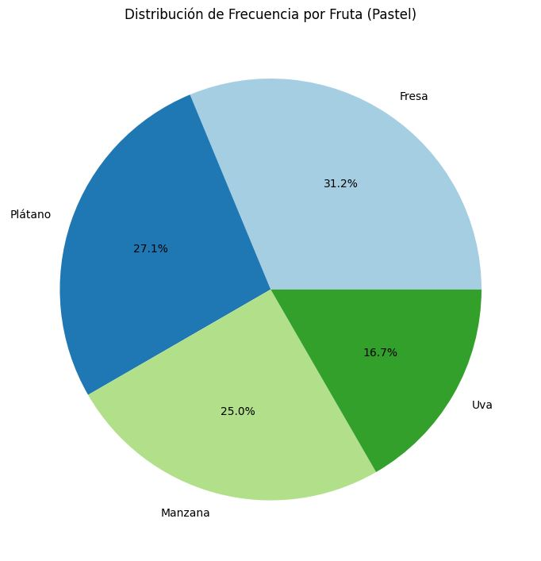

El web scraping (o raspado web) es una técnica utilizada en la ciencia de datos para extraer información de sitios web de manera automatizada. Consiste en programar scripts o utilizar herramientas específicas que navegan por las páginas web, extraen los datos deseados y los estructuran en formatos utilizables para análisis posteriores, como bases de datos o archivos CSV.
En este ejemplo de Google Colab obtendremos las etiquetas h2 de una pagina web que cree anteriormente solo para observar que si funciona el código como debe y descargara un archivo de texto en la computadora.
https://colab.research.google.com/drive/1RaZ08O1AoodJCW428s64skahXHihQVDm?usp=sharing
La visualización de datos es una de las áreas más importantes en la ciencia de datos, ya que permite representar de manera gráfica la información para facilitar su comprensión y análisis. Algunas de las técnicas más comunes en visualización de datos:
Una tabla de frecuencia es una forma simple de mostrar la cantidad de veces que ocurre un valor en un conjunto de datos. Se usa para resumir y organizar datos categóricos o discretos, mostrando cómo se distribuyen las observaciones en diferentes categorías.
Ejemplo de tabla de frecuencia:
Un gráfico de pastel es un diagrama circular que se divide en sectores, donde cada sector representa una proporción o porcentaje de una categoría respecto al total.
Ejemplo de gráfico de pastel:
Un gráfico de barras se utiliza para comparar diferentes categorías. Las barras pueden ser verticales u horizontales, y su longitud o altura refleja la magnitud de los datos asociados a cada categoría.
Ejemplo de gráfico de barras:
En este ejemplo de Google Colab tenemos los datos de frutas más consumidas por temporada el cual obtendremos su tabla de frecuencia, grafica de pastel, grafica de barras.
https://colab.research.google.com/drive/1e1LHNTnhtZ6g9h1YiY5urvkt9Vd_iHEU?usp=sharing
Las medidas de tendencia central son estadísticas que describen el punto medio o el valor típico de un conjunto de datos. En ciencia de datos, estas medidas son esenciales para resumir y entender rápidamente la distribución de los datos. Las tres medidas más comunes son la media, la mediana y la moda.
La media es el valor promedio de un conjunto de datos, calculado sumando todos los valores y dividiendo el resultado entre el número total de observaciones.
La mediana es el valor que ocupa el lugar central en un conjunto de datos ordenado. Si el número de observaciones es impar, la mediana es el valor en el centro. Si el número de observaciones es par, la mediana es el promedio de los dos valores centrales.
La moda es el valor que aparece con mayor frecuencia en un conjunto de datos. A diferencia de la media y la mediana, un conjunto de datos puede tener más de una moda (si hay varios valores con la misma frecuencia) o ninguna moda (si todos los valores son únicos).
En este ejemplo de Google Colab tenemos las edades de pacientes en una clínica el cual obtendremos los resultados de la Media, Mediana, Moda.
https://colab.research.google.com/drive/1qpVtflQrFQf46226alg-kssPRWW9euXG?usp=sharing
Las medidas de dispersión en ciencia de datos son estadísticas que describen qué tan dispersos o esparcidos están los datos alrededor de una medida de tendencia central (como la media o la mediana). Estas medidas complementan las medidas de tendencia central proporcionando información sobre la variabilidad de los datos.
En este ejemplo de Google Colab tenemos unos cuantos datos del peso de toronjas (en gramos) en el cual obtendremos las medidas de dispersión en este caso la tabla de frecuencia y el histograma.
https://colab.research.google.com/drive/1kr2IcNpU_p-kcmgoX7nJDIEszEk6gO8C?usp=sharing
Como conclusión de este proyecto se vio todo lo que nos dio en el curso, los códigos son reciclados de otros trabajos, pero por las etiquetas se entiende que se debe cambiar para que el código funcione con otro tipos de datos, pero en si la ciencia de datos debe estar presente para nosotros como programadores ya que es algo muy útil para crear algoritmos en algunos programas. El Webscraping por ejemplo ayuda obtener datos de una pagina para el posible análisis de esos datos. Mientras que las técnicas de visualización nos ayudan a representar de manera grafica la información para mejor compresión y análisis al momento de analizar datos. Al igual que las medidas de tendencia nos dan un punto medio de los datos.